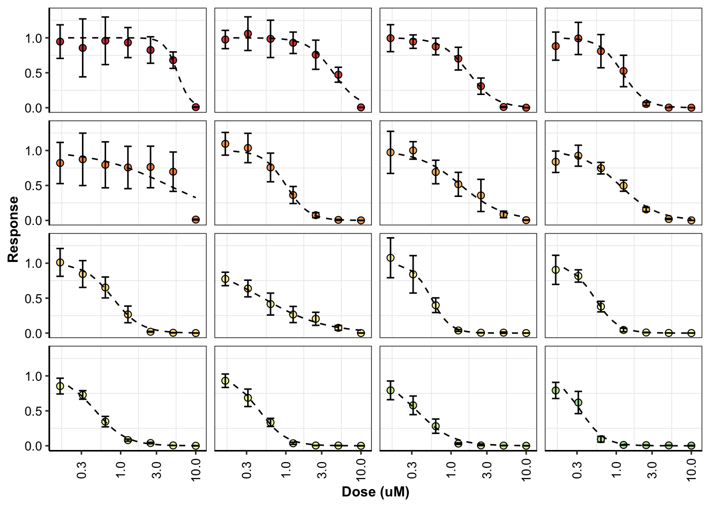
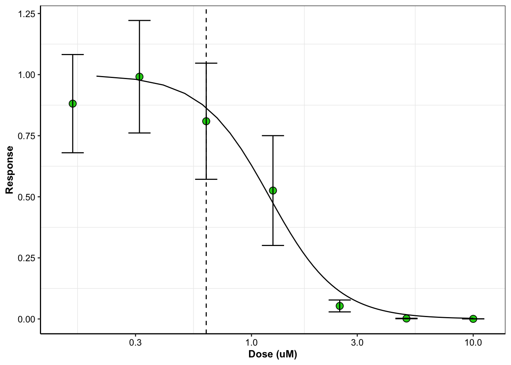
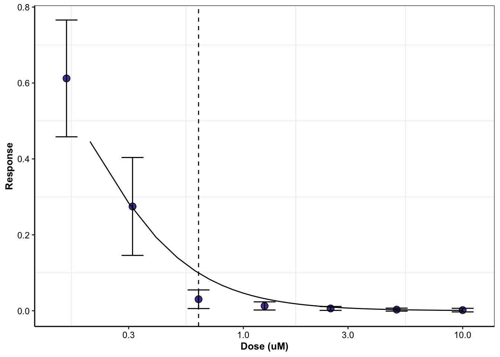

Last updated: 2020-08-13
Checks: 7 0
Knit directory: duplex_sequencing_screen/
This reproducible R Markdown analysis was created with workflowr (version 1.6.2). The Checks tab describes the reproducibility checks that were applied when the results were created. The Past versions tab lists the development history.
Great! Since the R Markdown file has been committed to the Git repository, you know the exact version of the code that produced these results.
Great job! The global environment was empty. Objects defined in the global environment can affect the analysis in your R Markdown file in unknown ways. For reproduciblity it’s best to always run the code in an empty environment.
The command set.seed(20200402) was run prior to running the code in the R Markdown file. Setting a seed ensures that any results that rely on randomness, e.g. subsampling or permutations, are reproducible.
Great job! Recording the operating system, R version, and package versions is critical for reproducibility.
Nice! There were no cached chunks for this analysis, so you can be confident that you successfully produced the results during this run.
Great job! Using relative paths to the files within your workflowr project makes it easier to run your code on other machines.
Great! You are using Git for version control. Tracking code development and connecting the code version to the results is critical for reproducibility.
The results in this page were generated with repository version 84ac76d. See the Past versions tab to see a history of the changes made to the R Markdown and HTML files.
Note that you need to be careful to ensure that all relevant files for the analysis have been committed to Git prior to generating the results (you can use wflow_publish or wflow_git_commit). workflowr only checks the R Markdown file, but you know if there are other scripts or data files that it depends on. Below is the status of the Git repository when the results were generated:
Ignored files:
Ignored: .Rhistory
Ignored: .Rproj.user/
Untracked files:
Untracked: 10kmutants_nowt.csv
Untracked: 10kmutants_wt_1_1.csv
Untracked: Rplot.png
Untracked: Rplot01.pdf
Untracked: allele_freq_enrichment_sim.pdf
Untracked: allmuts_dose_response.pdf
Untracked: analysis/bcrabl_hill_ic50s.csv
Untracked: analysis/column_definitions_for_twinstrand_data_06062020.csv
Untracked: analysis/dose_response_curve_fitting_with_errorbars.Rmd
Untracked: analysis/multinomial_sims.Rmd
Untracked: analysis/mutagenesis_radar_chart.Rmd
Untracked: analysis/signatures_barplot.pdf
Untracked: analysis/simple_data_generation.Rmd
Untracked: analysis/twinstrand_growthrates_simple.csv
Untracked: analysis/twinstrand_maf_merge_simple.csv
Untracked: analysis/wildtype_growthrates_sequenced.csv
Untracked: bcrablwt_dose_response.pdf
Untracked: code/microvariation.normalizer.R
Untracked: count_enrichment_sim.pdf
Untracked: data/Combined_data_frame_IC_Mutprob_abundance.csv
Untracked: data/IC50HeatMap.csv
Untracked: data/Twinstrand/
Untracked: data/gfpenrichmentdata.csv
Untracked: data/heatmap_concat_data.csv
Untracked: data/mcmc_inferred_doses.csv
Untracked: dosing_error_doseresponse.pdf
Untracked: dosing_error_doseresponse_forgrant.pdf
Untracked: dosing_normalization_standard_deviations.pdf
Untracked: dosing_normalization_stdevs_paired.pdf
Untracked: e255k_dose_response.pdf
Untracked: e255k_initial_spikins_figure.pdf
Untracked: enrichment_simulations_3mutant_MAF.pdf
Untracked: enrichment_simulations_3mutant_count.pdf
Untracked: figures_archive/
Untracked: inferred_doses_barplot_werrorbars.pdf
Untracked: inferred_doses_barplot_werrorbars_wt.pdf
Untracked: inferred_doses_caterpillar.pdf
Untracked: inferred_doses_caterpillar2.pdf
Untracked: inferred_doses_violin.pdf
Untracked: m351t_deviation.pdf
Untracked: output/archive/
Untracked: output/bmes_abstract_51220.pdf
Untracked: output/clinicalabundancepredictions_BMES_abstract_51320.pdf
Untracked: output/clinicalabundancepredictions_BMES_abstract_52020.pdf
Untracked: output/enrichment_simulations_3mutants_52020.pdf
Untracked: output/grant_fig.pdf
Untracked: output/grant_fig_v2.pdf
Untracked: output/grant_fig_v2updated.pdf
Untracked: output/ic50data_all_conc.csv
Untracked: output/ic50data_all_confidence_intervals_individual_logistic_fits.csv
Untracked: output/ic50data_all_confidence_intervals_raw_data.csv
Untracked: output/ic50heatmap_sd_ci.csv
Untracked: output/twinstrand_microvariations_normalized.csv
Untracked: shinyapp/
Unstaged changes:
Modified: analysis/4_7_20_update.Rmd
Modified: analysis/E255K_alphas_figure.Rmd
Modified: analysis/clinical_abundance_predictions.Rmd
Modified: analysis/enrichment_simulations.Rmd
Modified: analysis/misc.Rmd
Modified: analysis/nonlinear_growth_analysis.Rmd
Modified: analysis/spikeins_depthofcoverages.Rmd
Modified: analysis/twinstrand_spikeins_data_generation.Rmd
Deleted: data/README.md
Modified: output/twinstrand_maf_merge.csv
Modified: output/twinstrand_simple_melt_merge.csv
Note that any generated files, e.g. HTML, png, CSS, etc., are not included in this status report because it is ok for generated content to have uncommitted changes.
These are the previous versions of the repository in which changes were made to the R Markdown (analysis/dose_response_curve_fitting.Rmd) and HTML (docs/dose_response_curve_fitting.html) files. If you’ve configured a remote Git repository (see ?wflow_git_remote), click on the hyperlinks in the table below to view the files as they were in that past version.
| File | Version | Author | Date | Message |
|---|---|---|---|---|
| Rmd | 84ac76d | haiderinam | 2020-08-13 | wflow_publish(“analysis/dose_response_curve_fitting.Rmd”) |
| html | c3a2653 | haiderinam | 2020-06-07 | Build site. |
| Rmd | b12549f | haiderinam | 2020-06-07 | wflow_publish(“analysis/dose_response_curve_fitting.Rmd”) |
####Please change required directories this chunk if compiling in R rather than RmD
#Inputs:
conc_for_predictions=0.8
net_gr_wodrug=0.055
#Reading required tables
ic50data=read.csv("data/heatmap_concat_data.csv",header = T,stringsAsFactors = F)
# ic50data=read.csv("../data/heatmap_concat_data.csv",header = T,stringsAsFactors = F)##Data Parsing– Dose Response Data
###Importing model with BCR-ABL mutant dose responses (Chuan’s data) ###Also applying the 2-parameter logistic. Upper and lower limits are fixed. May be good or bad.
#Deciding not to use nls() because it's a pain in the ...
#https://www.youtube.com/watch?v=aXpJE7IGiPY this has a nice overview of curve fitting
# library(dplyr)
# rm(list=ls())
####Getting effect of drug on growth rate####
ic50data=ic50data[c(1:10),]
ic50data_long=melt(ic50data,id.vars = "conc",variable.name = "species",value.name = "y")
#Removing useless mutants (for example keeping only maxipreps and removing low growth rate mutants)
ic50data_long=ic50data_long%>%filter(species%in%c("Wt","V299L_H","E355A","D276G_maxi","H396R","F317L","F359I","E459K","G250E","F359C","F359V","M351T","L248V","E355G_maxi","Q252H_maxi","Y253F","F486S_maxi","H396P_maxi","E255K","Y253H","T315I","E255V"))
#Making standardized names
ic50data_long$mutant=ic50data_long$species
ic50data_long=ic50data_long%>%
# filter(conc=="0.625")%>%
# filter(conc=="1.25")%>%
mutate(mutant=case_when(species=="F486S_maxi"~"F486S",
species=="H396P_maxi"~"H396P",
species=="Q252H_maxi"~"Q252H",
species=="E355G_maxi"~"E355G",
species=="D276G_maxi"~"D276G",
species=="V299L_H" ~ "V299L",
species==mutant ~as.character(mutant)))
# ic50data_long_625$species[order((ic50data_long_625$y),decreasing = T)]
#In the next step, I'm ordering mutants by decreasing resposne to the 625nM dose. Then I use this to change the levels of the species factor from more to less resistant. This helps with ggplot because now I can color the mutants with decreasing resistance
ic50data_long_625=ic50data_long%>%filter(conc==.625)
ic50data_long$species=factor(ic50data_long$species,levels = as.character(ic50data_long_625$species[order((ic50data_long_625$y),decreasing = T)]))
#Plotting the normalized dose response curves
getPalette = colorRampPalette(brewer.pal(9, "Spectral"))
plotly=ggplot(ic50data_long,aes(x=conc,y=y,color=factor(species)))+
facet_wrap(~factor(species))+
# geom_line()+
geom_point()+
cleanup+
scale_x_continuous(trans="log10")+
scale_color_manual(values = getPalette(length(unique(ic50data_long$species))))
ggplotly(plotly)########Four parameter logistic########
#Reference: https://journals.plos.org/plosone/article/file?type=supplementary&id=info:doi/10.1371/journal.pone.0146021.s001
#In short: For each dose in each species, get the response
# rm(list=ls())
ic50data_long_model=data.frame()
for (species_curr in sort(unique(ic50data_long$species))){
ic50data_species_specific=ic50data_long%>%filter(species==species_curr)
x=ic50data_species_specific$conc
y=ic50data_species_specific$y
#Next: Appproximating Response from dose (inverse of the prediction)
ic50.ll4=drm(y~conc,data=ic50data_long%>%filter(species==species_curr),fct=LL.3(fixed=c(NA,1,NA)))
b=coef(ic50.ll4)[1]
c=0
d=1
e=coef(ic50.ll4)[2]
###Getting predictions
ic50data_species_specific=ic50data_species_specific%>%group_by(conc)%>%mutate(y_model=c+((d-c)/(1+exp(b*(log(conc)-log(e))))))
ic50data_species_specific=data.frame(ic50data_species_specific) #idk why I have to end up doing this
ic50data_long_model=rbind(ic50data_long_model,ic50data_species_specific)
}
ic50data_long=ic50data_long_model
#In the next step, I'm ordering mutants by decreasing resposne to the 625nM dose. Then I use this to change the levels of the species factor from more to less resistant. This helps with ggplot because now I can color the mutants with decreasing resistance
ic50data_long_625=ic50data_long%>%filter(conc==.625)
ic50data_long$species=factor(ic50data_long$species,levels = as.character(ic50data_long_625$species[order((ic50data_long_625$y_model),decreasing = T)]))
#Adding drug effect
##########Changed this on 2/20. Using y from 4 parameter logistic rather than raw values
ic50data_long=ic50data_long%>%
# filter(!species=="Wt")%>%
mutate(drug_effect=-log(y_model)/72)
#Adding Net growth rate
ic50data_long$netgr_pred=net_gr_wodrug-ic50data_long$drug_effect####Plotting modeled dose responses
getPalette = colorRampPalette(brewer.pal(9, "Spectral"))
plotly=ggplot(ic50data_long,aes(x=conc,color=factor(species)))+
facet_wrap(~factor(species))+
geom_line(aes(y=y_model))+
geom_point(aes(y=y))+
cleanup+
scale_x_continuous(trans="log10")+
scale_color_manual(values = getPalette(length(unique(ic50data_long$species))))
ggplotly(plotly)####Plotting species changes in dose responses over different concentrations
plotly=ggplot(ic50data_long,aes(x=species,y=y_model))+
facet_wrap(~factor(conc))+
geom_col(aes(fill=factor(species)))+
cleanup+
scale_fill_manual(values = getPalette(length(unique(ic50data_long$species))))+
theme(axis.text = element_blank(),
axis.ticks = element_blank())
ggplotly(plotly)###Dose response curve fitting with 4-parameter logistic ####Second iteration: Get y_model for predefined concentration ranges of interest
conc.list=seq(.2,10,by=.1)
ic50.model.pred=data.frame(matrix(NA,nrow=length(conc.list)*length(unique(ic50data_long$species)),ncol=0))
for(species_curr in sort(unique(ic50data_long$mutant))){
ic50data_species_specific=ic50data_long%>%filter(mutant==species_curr)
#Next: Appproximating Response from dose (inverse of the prediction)
ic50.ll4=drm(y~conc,data=ic50data_species_specific,fct=LL.3(fixed=c(NA,1,NA)))
#Extracting coefficients
b=coef(ic50.ll4)[1]
c=0
d=1
e=coef(ic50.ll4)[2]
rm(ic50.model.pred.species.specific)
ic50.model.pred.species.specific=data.frame(matrix(NA,nrow=length(conc.list),ncol=0))
i=1
ic50.model.pred.species.specific$mutant=species_curr
#For loop for the unique concentrations
for(conc.curr in conc.list){
ic50.model.pred.species.specific$conc[i]=conc.curr
ic50.model.pred.species.specific$y_model[i]=c+((d-c)/(1+exp(b*(log(conc.curr)-log(e)))))
i=i+1
}
ic50.model.pred=rbind(ic50.model.pred,ic50.model.pred.species.specific)
}Warning in rm(ic50.model.pred.species.specific): object
'ic50.model.pred.species.specific' not found#Adding drug effect
ic50.model.pred=ic50.model.pred%>%
# filter(!mutant=="Wt")%>%
mutate(drug_effect=-log(y_model)/72)
#Adding Net growth rate
# ic50.model.pred$netgr_pred=.055-ic50.model.pred$drug_effect
ic50data_long=ic50.model.pred
ic50data_all_conc=ic50data_long####Changing the format of the IC50s dataframe so that it matches twinstrand data labeling etc
####Also converting dose response to expected change in growth rate ####This requires estimating a growth rate without drug. Note that I am using k=0.055 or 14 hours right now.
#Variables when making predictions:
#Your assumed fitness without drug
ic50data_long$netgr_pred=net_gr_wodrug-ic50data_long$drug_effect
#Your assumed concentration
ic50data_long=ic50data_long%>%filter(conc==conc_for_predictions) ###Can remove this filter if you wanna look at how well predictions would match up if there was a systematic difference in the concentrations Chuan used and you used in your IC50s
##########Changed this on 2/20. Using y from 4 parameter logistic rather than raw values
# ic50data_formerge=ic50data_long%>%filter(!species=="Wt")%>%mutate(drug_effect=-log(y)/72)
# ic50data_formerge=ic50data_long%>%filter(!species=="Wt")%>%mutate(drug_effect=-log(y_model)/72)head(ic50data_all_conc) mutant conc y_model drug_effect
1 D276G 0.2 0.5384902 0.008597028
2 D276G 0.3 0.3848405 0.013262867
3 D276G 0.4 0.2867330 0.017350054
4 D276G 0.5 0.2219495 0.020907018
5 D276G 0.6 0.1773183 0.024025125
6 D276G 0.7 0.1453437 0.026786858# write.csv(ic50data_all_conc,"ic50data_all_conc.csv")Next, I’m going to look a little closely at the errors we typically see in dose response curves:
Below, I’m going to plot dose response curves with errorbars representing real day to day variation.
ic50heatmap=read.csv("data/IC50HeatMap.csv")
# a=ic50heatmap%>%mutate(mutant=species)%>%dplyr::select(!species)
# b=a%>%group_by(mutant)%>%rowwise()%>%summarize(replicate=n())
ic50heatmap=ic50heatmap%>%mutate(mutant=species)%>%dplyr::select(!species)
ic50heatmap=ic50heatmap%>%filter(mutant%in%c("V299L_H","E355A","D276G_maxi","H396R","F317L","F359I","E459K","G250E","F359C","F359V","M351T","L248V","E355G_maxi","Q252H_maxi","Y253F","F486S_maxi","H396P_maxi","E255K","Y253H","T315I","E255V","WT"))
ic50heatmap=ic50heatmap%>%
mutate(mutant=case_when(mutant=="F486S_maxi"~"F486S",
mutant=="H396P_maxi"~"H396P",
mutant=="Q252H_maxi"~"Q252H",
mutant=="E355G_maxi"~"E355G",
mutant=="D276G_maxi"~"D276G",
mutant=="WT"~"Wt",
TRUE~mutant))
ic50heatmap_melt=melt(ic50heatmap,"mutant",variable.name = "conc",value.name = "y")
ic50heatmap_melt$conc=as.character(ic50heatmap_melt$conc)
ic50heatmap_melt=ic50heatmap_melt%>%filter(!conc%in%"Vehicle")
ic50heatmap_melt=ic50heatmap_melt%>%rowwise()%>%mutate(conc=as.numeric(as.character(strsplit(conc,"X")[[1]][2])))
ic50heatmap_sd=ic50heatmap_melt%>%
group_by(mutant,conc)%>%
summarize(y_mean=mean(y),y_sd=sd(y),y_n=n())%>%
mutate(y_se=y_sd/sqrt(y_n),y_ci=qt(1-(.05/2),y_n-1)*y_se)Warning: Grouping rowwise data frame strips rowwise natureic50data_long=read.csv("output/ic50data_all_conc.csv",header = T,stringsAsFactors = F,row.names = 1)
# ic50heatmap_sd$mutant=factor(ic50heatmap_sd$mutant,levels = as.character(unique(ic50heatmap_sd$mutant[order((ic50heatmap_sd$netgr_pred_mean),decreasing = T)])))
ic50data_long_625=ic50data_long%>%filter(conc==.6)
ic50data_long$mutant=factor(ic50data_long$mutant,levels = as.character(ic50data_long_625$mutant[order((ic50data_long_625$y),decreasing = T)]))
ic50heatmap_sd$mutant=factor(ic50heatmap_sd$mutant,levels = as.character(ic50data_long_625$mutant[order((ic50data_long_625$y),decreasing = T)]))
getPalette = colorRampPalette(brewer.pal(9, "Spectral"))
ggplot(ic50heatmap_sd%>%filter(conc>=.1,!mutant%in%c("F486S","F359C","E355A","D276G","V299L","Wt")),aes(x=conc,y=y_mean))+
geom_point(color="black",size=2,shape=21,aes(fill=mutant))+
geom_errorbar(aes(ymin=y_mean-y_sd,ymax=y_mean+y_sd,width=.1))+
scale_x_continuous(name="Dose (uM)",trans="log10")+
scale_y_continuous(name="Response")+
cleanup+
geom_line(data=ic50data_long%>%filter(!mutant%in%c("F486S","F359C","E355A","D276G","V299L","Wt")),aes(x=conc,y=y_model),linetype="dashed")+
scale_fill_manual(values =getPalette(length(unique(ic50data_long$mutant))))+
theme(legend.position = "none",axis.text =
element_text(size=9,color="black",face="plain"),axis.title =
element_text(size=10,color="black",face="bold"),
strip.text = element_blank(),
axis.text.x = element_text(angle=90,hjust=.5,vjust=.5))+
facet_wrap(~mutant)
# ggsave("allmuts_dose_response.pdf",width=4,height=4,units="in",useDingbats=F)
ggplot(ic50heatmap_sd%>%filter(mutant%in%"E255K",conc>=.1),aes(x=conc,y=y_mean))+geom_point(color="black",size=3,shape=21,aes(fill="green"))+geom_errorbar(aes(ymin=y_mean-y_sd,ymax=y_mean+y_sd,width=.1))+scale_x_continuous(name="Dose (uM)",trans="log10")+scale_y_continuous(name="Response")+cleanup+geom_vline(aes(xintercept=.625),linetype="dashed")+geom_line(data=ic50data_long%>%filter(mutant%in%"E255K"),aes(x=conc,y=y_model))+scale_fill_manual(values = "#1CCE16")+theme(legend.position = "none",axis.text = element_text(size=9,color="black",face="plain"),axis.title = element_text(size=10,color="black",face="bold"))
# ggsave("e255k_dose_response.pdf",width=2,height=2,units="in",useDingbats=F)
ggplot(ic50heatmap_sd%>%filter(mutant%in%"Wt",conc>=.1),aes(x=conc,y=y_mean))+geom_point(color="black",size=3,shape=21,aes(fill="green"))+geom_errorbar(aes(ymin=y_mean-y_sd,ymax=y_mean+y_sd,width=.1))+scale_x_continuous(name="Dose (uM)",trans="log10")+scale_y_continuous(name="Response")+cleanup+geom_vline(aes(xintercept=.625),linetype="dashed")+geom_line(data=ic50data_long%>%filter(mutant%in%"Wt"),aes(x=conc,y=y_model))+scale_fill_manual(values = "#5941A9")+theme(legend.position = "none",axis.text = element_text(size=9,color="black",face="plain"),axis.title = element_text(size=10,color="black",face="bold"))
# ggsave("bcrablwt_dose_response.pdf",width=2,height=2,units="in",useDingbats=F)
# write.csv(ic50heatmap_sd,"output/ic50heatmap_sd_ci.csv")################Looking at the typical error in dose-response#######
plotly=ggplot(ic50heatmap_sd%>%filter(conc%in%.625),aes(x=mutant,y=y_mean))+geom_point()+geom_errorbar(aes(ymin=y_mean-y_sd,ymax=y_mean+y_sd))
ggplotly(plotly)Wt=ic50heatmap_sd%>%filter(mutant%in%"Wt")
conc=Wt$conc
ic50.ll4=drm(y_mean~conc,data=ic50heatmap_sd%>%filter(mutant%in%"Wt"),fct=LL.3(fixed=c(NA,1,NA)))
b=coef(ic50.ll4)[1]
c=0
d=1
e=coef(ic50.ll4)[2]
###Getting predictions
Wt=Wt%>%group_by(conc)%>%mutate(y_model=c+((d-c)/(1+exp(b*(log(conc)-log(e))))))
predict(ic50.ll4,data.frame(dose=.625))Prediction
0.09731485 ###We saw that at 625nM, Wt has a mean dose response of .03 with a standard deviation of .011 (range of .0195 to .0405)
predict(ic50.ll4,data.frame(dose=1.62))Prediction
0.01944824 predict(ic50.ll4,data.frame(dose=1.05))Prediction
0.04110806 predict(ic50.ll4,data.frame(dose=1.25))Prediction
0.03048723 #Therefore the typical error in dose-response for a dose of 1.25 goes from 1.05 to 1.62
sessionInfo()R version 4.0.0 (2020-04-24)
Platform: x86_64-apple-darwin17.0 (64-bit)
Running under: macOS Catalina 10.15.6
Matrix products: default
BLAS: /Library/Frameworks/R.framework/Versions/4.0/Resources/lib/libRblas.dylib
LAPACK: /Library/Frameworks/R.framework/Versions/4.0/Resources/lib/libRlapack.dylib
locale:
[1] en_US.UTF-8/en_US.UTF-8/en_US.UTF-8/C/en_US.UTF-8/en_US.UTF-8
attached base packages:
[1] parallel grid stats graphics grDevices utils datasets
[8] methods base
other attached packages:
[1] drc_3.0-1 MASS_7.3-51.5 BiocManager_1.30.10
[4] plotly_4.9.2.1 ggsignif_0.6.0 devtools_2.3.0
[7] usethis_1.6.1 RColorBrewer_1.1-2 reshape2_1.4.4
[10] ggplot2_3.3.0 doParallel_1.0.15 iterators_1.0.12
[13] foreach_1.5.0 dplyr_0.8.5 VennDiagram_1.6.20
[16] futile.logger_1.4.3 tictoc_1.0 knitr_1.28
[19] workflowr_1.6.2
loaded via a namespace (and not attached):
[1] fs_1.4.1 httr_1.4.1 rprojroot_1.3-2
[4] tools_4.0.0 backports_1.1.7 R6_2.4.1
[7] lazyeval_0.2.2 colorspace_1.4-1 withr_2.2.0
[10] tidyselect_1.1.0 prettyunits_1.1.1 processx_3.4.2
[13] curl_4.3 compiler_4.0.0 git2r_0.27.1
[16] cli_2.0.2 formatR_1.7 sandwich_2.5-1
[19] desc_1.2.0 labeling_0.3 scales_1.1.1
[22] mvtnorm_1.1-0 callr_3.4.3 stringr_1.4.0
[25] digest_0.6.25 foreign_0.8-78 rmarkdown_2.1
[28] rio_0.5.16 pkgconfig_2.0.3 htmltools_0.4.0
[31] sessioninfo_1.1.1 plotrix_3.7-8 htmlwidgets_1.5.1
[34] rlang_0.4.6 readxl_1.3.1 farver_2.0.3
[37] zoo_1.8-8 jsonlite_1.6.1 crosstalk_1.1.0.1
[40] gtools_3.8.2 zip_2.0.4 car_3.0-7
[43] magrittr_1.5 Matrix_1.2-18 Rcpp_1.0.4.6
[46] munsell_0.5.0 fansi_0.4.1 abind_1.4-5
[49] lifecycle_0.2.0 stringi_1.4.6 multcomp_1.4-13
[52] whisker_0.4 yaml_2.2.1 carData_3.0-3
[55] pkgbuild_1.0.8 plyr_1.8.6 promises_1.1.0
[58] forcats_0.5.0 crayon_1.3.4 lattice_0.20-41
[61] splines_4.0.0 haven_2.2.0 hms_0.5.3
[64] ps_1.3.3 pillar_1.4.4 codetools_0.2-16
[67] pkgload_1.0.2 futile.options_1.0.1 glue_1.4.1
[70] evaluate_0.14 lambda.r_1.2.4 data.table_1.12.8
[73] remotes_2.1.1 vctrs_0.3.0 httpuv_1.5.2
[76] testthat_2.3.2 cellranger_1.1.0 gtable_0.3.0
[79] purrr_0.3.4 tidyr_1.0.3 assertthat_0.2.1
[82] xfun_0.13 openxlsx_4.1.5 later_1.0.0
[85] survival_3.1-12 viridisLite_0.3.0 tibble_3.0.1
[88] memoise_1.1.0 TH.data_1.0-10 ellipsis_0.3.1